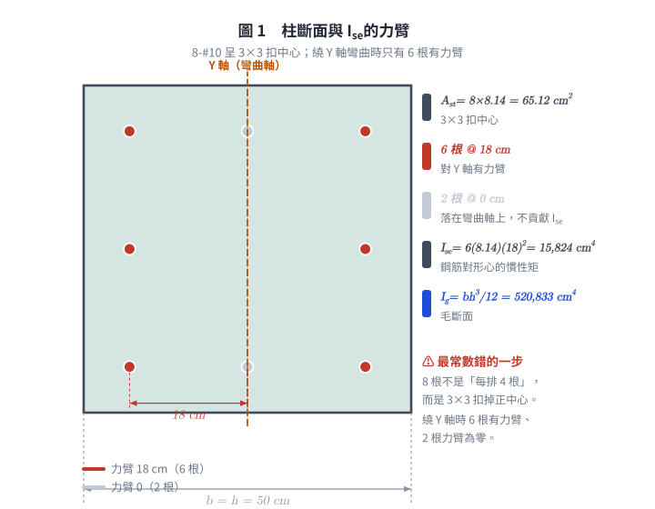
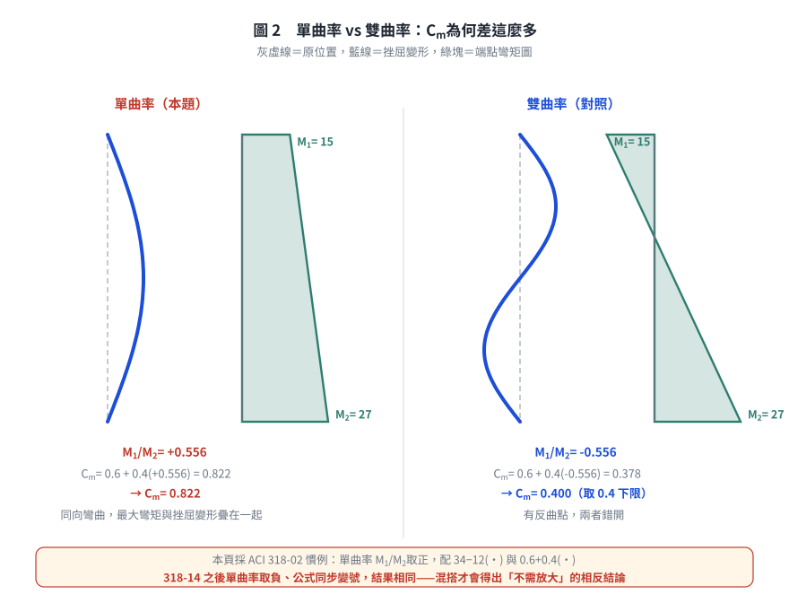
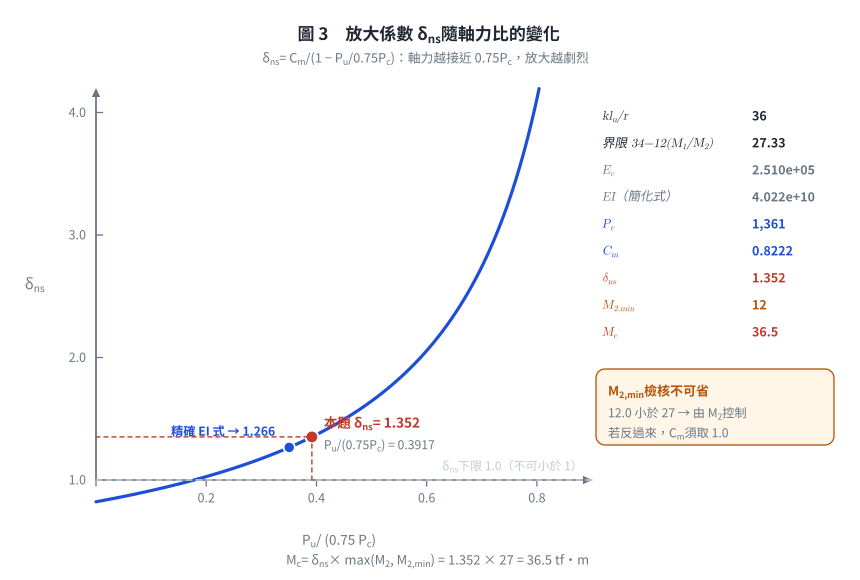

考題編號：RC-2006-2
主分類： RC-U1-3 細長柱
副分類： RC-U1-2 RC 柱強度分析與設計
設計法： USD強度設計法
標籤： 無側移柱 彎矩放大法 細長柱 Cm係數 單曲率 δns放大係數 臨界挫屈載重Pc
1. 原始題目重述 (Problem Restatement)
無側移方形柱（50×50 cm），8-#10 鋼筋，單曲率彎矩，以彎矩放大法求設計放大彎矩 $M_c$。
已知條件：
| 項目 | 數值 |
|---|---|
| 斷面 | $50 \times 50$ cm |
| 配筋 | 8-#10，$A_b = 8.14$ cm²，$A_{st} = 65.12$ cm² |
| 淨高 $l_u$ | 6 m = 600 cm |
| 有效長度係數 $k$ | 0.9 |
| $f'_c$ | 280 kgf/cm² |
| $f_y$ | 4200 kgf/cm² |
| 設計軸力 $P_u$ | 400 tf = 400,000 kgf |
| 持續載重比 $\beta_d$ | 0.3 |
| 柱頭彎矩 $M_1$ | 15 tf·m（小端） |
| 柱腳彎矩 $M_2$ | 27 tf·m（大端） |
| 彎曲型式 | 單曲率（Same side curvature） |
題目附圖：

圖說：$50 \times 50$ cm 方形柱，8-#10 鋼筋（3×3 格扣中心 = 8 根），水平方向：鋼筋心位置為 7, 25, 43 cm（距左面），各排到形心距離 18 cm 或 0 cm。$f'_c=280$，$f_y=4200$ kgf/cm²，彎矩對 Y 軸。

圖 1 柱斷面與 $I_{se}$ 的力臂。8 根不是「每排 4 根」而是 3×3 扣掉正中心；繞 Y 軸時只有 6 根有 18 cm 力臂，可攔下 $I_{se}$ 數錯根數。
2. 考題核心精神與出題者意圖 (Core Concepts & Examiner's Intent)
四步驟： 計算 $EI$ → 求 $P_c$ → 求 $\delta_{ns}$ → $M_c = \delta_{ns} \times M_2$
關鍵陷阱：
- $C_m$ 的符號：單曲率 → $M_1/M_2$ 為正值 → $C_m = 0.6 + 0.4(M_1/M_2) \approx 0.82$
- 雙曲率才能讓 $C_m < 0.6$
3. 解題戰略地圖與陷阱分析 (Strategic Roadmap & Trap Analysis)
| 步驟 | 工作 |
|---|---|
| 1 | 細長比 $kl_u/r$，確認需要放大 |
| 2 | 計算 $EI = 0.4E_cI_g/(1+\beta_d)$（簡化式） |
| 3 | 計算 $P_c = \pi^2 EI/(kl_u)^2$ |
| 4 | $C_m = 0.6 + 0.4(M_1/M_2)$（單曲率正號） |
| 5 | $\delta_{ns} = C_m/(1-P_u/0.75P_c) \geq 1.0$ |
| 6 | $M_c = \delta_{ns} \times M_2$ |
二大陷阱：
| 陷阱 | 說明 |
|---|---|
| ⚠ $C_m$ 符號 | 單曲率：M1/M2 取正值；雙曲率：取負值 → 本題 Cm = 0.822 |
| ⚠ $r$ 的計算 | $r = 0.3h$（矩形柱），$h$ 為彎矩方向的截面尺寸 |
3.5 變數層次分析 (Variable Hierarchy Analysis)
最終目標
計算放大彎矩 Mc = δns × M2
本題關鍵公式鏈
$$\text{Step 1: } \frac{kl_u}{r} = \frac{0.9 \times 600}{0.3 \times 50} = 36 \quad > 34-12\!\left(\frac{M_1}{M_2}\right) = 27.3 \Rightarrow \text{需放大}$$
$$\text{Step 2: } EI = \frac{0.4 E_c I_g}{1+\beta_d}$$
$$\text{Step 3: } P_c = \frac{\pi^2 \boxed{EI}}{(kl_u)^2}$$
$$\text{Step 4: } C_m = 0.6 + 0.4\!\left(\frac{M_1}{M_2}\right) \quad \text{（單曲率取正號）}$$
$$\text{Step 5: } \delta_{ns} = \frac{\boxed{C_m}}{1 - \dfrac{P_u}{0.75 \boxed{P_c}}} \geq 1.0$$
$$\text{Step 6: } M_c = \boxed{\delta_{ns}} \times M_2$$
L1：題目直接給定
| 符號 | 數值 |
|---|---|
| $b = h$ | 50 cm |
| $l_u$ | 600 cm |
| $k$ | 0.9 |
| $P_u$ | 400,000 kgf |
| $\beta_d$ | 0.3 |
| $M_1, M_2$ | 15, 27 tf·m（單曲率） |
L2：需知識點推導
| 符號 | 公式/來源 | 卡關? |
|---|---|---|
| $r$ | $0.3h = 0.3\times50 = 15$ cm | |
| $kl_u/r$ | $0.9\times600/15 = 36$ | |
| 需放大條件 | $36 > 34-12\times(15/27)=27.3$ ✓ | |
| $E_c$ | $15{,}000\sqrt{280}=250{,}995$ kgf/cm² | |
| $I_g$ | $50^4/12=520{,}833$ cm⁴ | |
| $EI$ | $0.4\times250{,}995\times520{,}833/1.3=4.022\times10^{10}$ kgf·cm² | |
| $P_c$ | $\pi^2\times4.022\times10^{10}/(540)^2=1{,}362$ tf | |
| $C_m$ | $0.6+0.4\times(15/27)=0.822$ | |
| $0.75P_c$ | $0.75\times1{,}362=1{,}021$ tf | |
| $\delta_{ns}$ | $0.822/(1-400/1{,}021)=1.351$ | |
| $M_c$ | $1.351\times27=36.5$ tf·m |
L3：深層知識（不懂就卡住）
| 知識點 | 說明 | 卡關? |
|---|---|---|
| 單曲率 $C_m$ 正值 | 同向彎矩→等效均布彎矩接近 $M_2$→$C_m \to 1$；$M_1/M_2$ 用正號 | |
| $0.4EcIg$ 為何（非 $EI$ 實際值） | ACI 用折減 $EI$ 反映裂縫與潛變；$1+\beta_d$ 再折減長期效果 | |
| 為何 $0.75P_c$ | $0.75$ 是穩定折減係數，類似保險因數 |
4. 步驟化詳細計算過程 (Step-by-Step Detailed Calculation)
Step 1：細長比與是否需要放大
$$r = 0.3h = 0.3 \times 50 = 15 \text{ cm}$$
$$\frac{kl_u}{r} = \frac{0.9 \times 600}{15} = 36$$
判斷是否需要放大（單曲率）：
$$34 - 12\frac{M_1}{M_2} = 34 - 12 \times \frac{15}{27} = 34 - 6.67 = 27.33$$
（此界限另有上限 40：$27.33 < 40$，未觸頂。）
$$36 > 27.33 \quad \Rightarrow \text{需考慮細長效應，應用彎矩放大法}$$
適用性檢核： $kl_u/r = 36 < 100$，可用彎矩放大法；超過 100 必須做二階分析。
最小彎矩檢核（規範必做，容易漏）：
$$M_{2,\min} = P_u(1.5 + 0.03h) = 400{,}000 \times (1.5 + 0.03\times50) = 400{,}000 \times 3.0 = 1.2\times10^6\ \text{kgf·cm} = 12.0\ \text{tf·m}$$
$$M_2 = 27 > M_{2,\min} = 12.0 \quad \Rightarrow \text{以實際 } M_2 = 27\ \text{tf·m 為準}$$
本題 $M_2$ 控制，$M_c$ 不受影響；但這一步是規範明列的必要步驟，卷面省略會被扣分。
另外要記住配套規定：若改由 $M_{2,\min}$ 控制，$C_m$ 須取 1.0（或依實際端點彎矩比計算），
不能沿用原本的 $0.6+0.4(M_1/M_2)$。
Step 2：計算 $EI$
$$E_c = 15{,}000\sqrt{f'_c} = 15{,}000\sqrt{280} = 15{,}000 \times 16.7332 = 250{,}998 \text{ kgf/cm}^2$$
$$I_g = \frac{b h^3}{12} = \frac{50 \times 50^3}{12} = \frac{6{,}250{,}000}{12} = 520{,}833 \text{ cm}^4$$
$$EI = \frac{0.4 E_c I_g}{1+\beta_d} = \frac{0.4 \times 250{,}995 \times 520{,}833}{1.3}$$
$$= \frac{0.4 \times 130{,}727 \times 10^6}{1.3} = \frac{52{,}291 \times 10^6}{1.3} = \boxed{4.022 \times 10^{10} \text{ kgf·cm}^2}$$
Step 3：臨界挫屈載重 $P_c$
$$kl_u = 0.9 \times 600 = 540 \text{ cm}$$
$$P_c = \frac{\pi^2 EI}{(kl_u)^2} = \frac{9.870 \times 4.022 \times 10^{10}}{(540)^2} = \frac{3.970 \times 10^{11}}{291{,}600} = \boxed{1{,}362{,}000 \text{ kgf} = 1{,}362 \text{ tf}}$$
Step 4：等效均布彎矩係數 $C_m$
單曲率（同向彎矩，$M_1/M_2$ 取正值）：
符號約定（務必與細長比界限用同一套）： 本解採 ACI 318-99／318-02 的原生組合——
單曲率 $M_1/M_2 > 0$，配 $34 - 12(M_1/M_2)$ 與 $C_m = 0.6 + 0.4(M_1/M_2)$。
ACI 318-14 之後改為單曲率取負，公式同步變成 $34 + 12(M_1/M_2)$ 與 $C_m = 0.6 - 0.4(M_1/M_2)$，
兩套會得到完全相同的 27.33 與 0.822。錯的是把新慣例配舊公式（或反之）——
那會得出「不需放大、$M_c = 27$」的相反結論。
$$C_m = 0.6 + 0.4\frac{M_1}{M_2} = 0.6 + 0.4 \times \frac{15}{27} = 0.6 + 0.222 = \boxed{0.822}$$
（$C_m = 0.822 \geq 0.4$ ✓）
Step 5：彎矩放大係數 $\delta_{ns}$
$$\frac{P_u}{0.75 P_c} = \frac{400}{0.75 \times 1{,}362} = \frac{400}{1{,}021.5} = 0.3916$$
$$\delta_{ns} = \frac{C_m}{1 - P_u/(0.75 P_c)} = \frac{0.822}{1 - 0.3916} = \frac{0.822}{0.6084} = \boxed{1.351} \geq 1.0 \quad \checkmark$$
Step 6：放大彎矩 $M_c$
$$M_c = \delta_{ns} \times \max(M_2,\ M_{2,\min}) = 1.351 \times \max(27,\ 12.0) = 1.351 \times 27 = \boxed{36.5 \text{ tf·m}}$$

圖 2 單曲率 vs 雙曲率的 $C_m$。單曲率時最大彎矩與挫屈變形疊在一起，$C_m$ 趨近 1.0 最不利；圖下方註明本頁採 318-02 慣例，可攔下把新慣例（單曲率取負）配舊公式而得出「不需放大」的相反結論。

圖 3 $\delta_{ns}$ 隨 $P_u/(0.75P_c)$ 的變化。曲線在接近 1 時陡升，說明 0.75 折減與 $\delta_{ns} \ge 1.0$ 下限都不能漏；右下角把 $M_{2,\min} = 12.0$ tf·m 的檢核標出來，那是本題原本完全缺席的規範步驟。
5. 關鍵爭議點與進階探討
單曲率 vs 雙曲率的 $C_m$
| 型式 | $M_1/M_2$ 符號 | $C_m$ 計算（$\lvert M_1/M_2 \rvert = 0.556$） |
|---|---|---|
| 單曲率（本題） | 正值 | $0.6 + 0.4\times0.556 = 0.822$ |
| 雙曲率 | 負值 | $0.6 - 0.4\times0.556 = 0.378 \rightarrow$ 取 0.4 |
→ 單曲率 $C_m$ 較大（約 0.82），放大效應更顯著，是較危險的情況。
精確 $EI$ 公式驗算
$$EI_{better} = \frac{0.2E_cI_g + E_sI_{se}}{1+\beta_d}$$
$$I_{se} = 6\times8.14\times18^2 + 2\times8.14\times0^2 = 6\times8.14\times324 = 15{,}824 \text{ cm}^4$$
$$EI_{better} = \frac{0.2\times250{,}995\times520{,}833 + 2{,}040{,}000\times15{,}824}{1.3} = \frac{2.615\times10^{10}+3.228\times10^{10}}{1.3} = 4.495\times10^{10} \text{ kgf·cm}^2$$
$$P_{c,better} = 9.870\times4.495\times10^{10}/291{,}600 = 1{,}521 \text{ tf}$$
$$\delta_{ns,better} = 0.822/(1-400/0.75/1{,}521) = 0.822/0.650 = 1.265$$
$$M_{c,better} = 1.265\times27 = 34.2 \text{ tf·m}$$
簡化式（較保守）：36.5 tf·m；精確式：34.2 tf·m。考試使用簡化式即可。
圖解補繪：2026-08-21（向量圖 3 張，腳本 figs/gen_RC-2006-2.py，可重跑；腳本檔尾對 §4 公佈值做 assert）